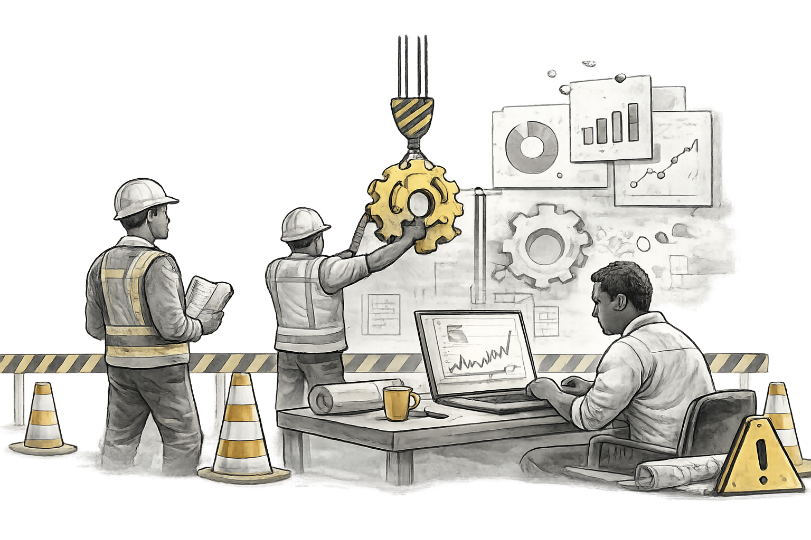

Hold Tight, We’re Building Something Meaningful
The Projects page is currently under construction. We are carefully designing a space for real world research, collaboration, and contributor driven impact.
This page will launch soon with live projects, contributor access, and public insight reports.

Get notified when projects go live
Leave your email and we’ll let you know once the Projects page is ready.